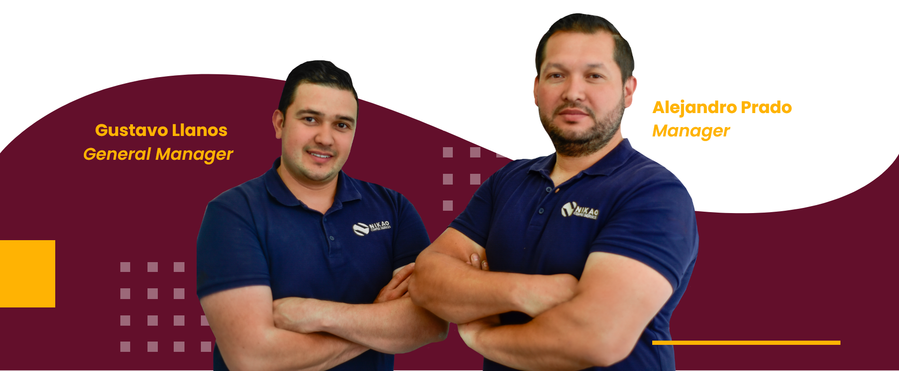

OUR BEGINNINGS
NIKAO COFFEE SERVICES was created with the desire to share our love for the coffee world. We are a Colombian family run business, our story begins in our country, we grew up among the coffee crops in the Eje Cafetero area between the Quindío and Risaralda mountains, living all the grain process from the planting, the harvest, the drying and the milling. We know what’s coffee about not only the beverage but the great work behind each cup.
THE OPPORTUNITY
We moved to UK in the first decade of 2000 and we kept working in coffee industry related jobs such as cafes and coffee shops, during that time we had our first contact with the espresso machines and its accessories and we discover an opportunity to work on. We realized coffee appliances maintenance was a very important part in the business, a correct and often machine service helps to maximize their working lives, whilst also preserving the taste and properties of all the hot drinks that are made with them. That’s how we decided to start working in a coffee services company, we learnt how to strip down an espresso machine and make a full maintenance by removing, adjusting, fixing and restoring each part. Also we acquire a huge knowledge about grain properties and characteristics, the coffee roastery and its delivery. After working for more than 8 years in this company and almost more than the half of our lives living close to the coffee we decide to start out our entrepreneurship focus in the whole coffee experience for business.
THE PRESENT
Nowadays we are based in South London UK with a huge experience in the coffee sector, a team of professionals passionate about how the espresso machines work and how to fix or restore them, also focus in the coffee roasting and distribution of fresh and high quality specialty beans for cafes, coffee shops, hotels and restaurants.
“Our goal is to establish a unique coffee experience by being involved in every step of production and making with a very transparent process from the farm to the cups.”
OUR TEAM
OUR SERVICE
We believe we are the perfect partners for you and your business. Able to give a complete set of services just for your needs. We work with the top commercial coffee machine manufacturers to provide you the best advice or guidance on selecting the right coffee making equipment, training your staff, and giving technical support for your business, with us you can get the best and guaranteed maintenance service for your appliances as well. As a retailer of some of the world’s finest coffee appliances, and other related products our goal is to provide customers with the espresso machines, grinders, and other equipment that they will love and use for years to come.
OUR COFFEE
We produce our own line of Coffees, we source all of our beans from some of the finest growing plantations in our native country, each bean has been specifically chosen, Hand-picked, carefully roasted and immediately packed and shipped to guarantee the freshness and best quality.